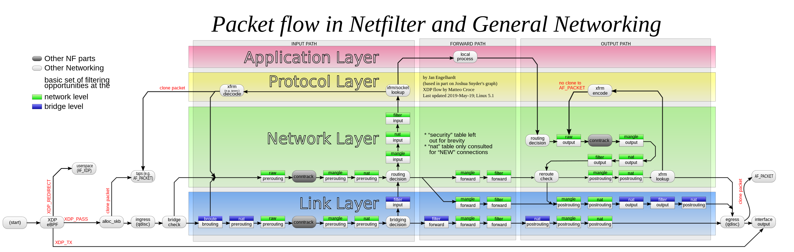

iptables 是 Linux 系统中的一个非常强大的防火墙工具，它可以用于过滤、修改、重定向和处理网络数据包。iptables 是基于 Netfilter 框架的，Netfilter 是 Linux 内核的一部分，它提供了在内核级别处理网络数据包的能力。

iptables 的主要功能包括：
- 数据包过滤：iptables 可以根据各种条件（如源 IP 地址、目的 IP 地址、协议类型、端口号等）来决定是否允许数据包通过。这是实现防火墙的基本功能。
- 网络地址转换（NAT）：iptables 可以修改数据包的源 IP 地址或目的 IP 地址，这是实现网络地址转换（NAT）的基本功能。
- 数据包重定向和修改：iptables 可以将数据包重定向到其a他的 IP 地址或端口，或者修改数据包的其他属性。
iptables 的规则是基于表和链的。表是规则的集合，链是表中的一个部分，它代表了数据包处理的一个阶段。iptables 有五个预定义的表：filter（用于数据包过滤）、nat（用于网络地址转换）、mangle（用于数据包修改）、raw（用于配置不进行连接跟踪的数据包）和security（用于强制访问控制）。iptables 是一个非常复杂和强大的工具，它需要深入的网络知识和 Linux 系统知识才能有效地使用。然而，对于网络管理员和系统管理员来说，学习和掌握 iptables 是非常有价值的，因为它可以提供非常强大和灵活的网络控制能力。
数据包过滤
iptables 的数据包过滤功能是通过 filter 表来实现的，这是 iptables 的默认表。filter 表有三个内置的链：INPUT、FORWARD 和 OUTPUT。
- INPUT 链用于处理到达本机的数据包。
- FORWARD 链用于处理经过本机转发的数据包。
- OUTPUT 链用于处理本机发送的数据包。
你可以在这些链上添加规则来过滤数据包。每个规则都有一个匹配条件和一个目标（动作）。当一个数据包满足匹配条件时，就会执行相应的目标。
以下是一些基本的例子：
- 阻止来自特定 IP 地址的数据包：
|
|
这个命令在 INPUT 链上添加了一个规则，该规则会匹配所有源 IP 地址为 192.168.1.100 的数据包，并将它们丢弃（DROP）。
- 只允许来自特定端口的数据包：
|
|
这两个命令在 INPUT 链上添加了两个规则。第一个规则会匹配所有目的端口为 22 的 TCP 数据包，并将它们接受（ACCEPT）。第二个规则会匹配所有 TCP 数据包，并将它们丢弃（DROP）。因为 iptables 的规则是按顺序处理的，所以这两个规则的效果是只允许来自端口 22 的数据包，其他的 TCP 数据包都会被丢弃。
- 阻止所有的数据包：
|
|
这三个命令将 INPUT、FORWARD 和 OUTPUT 链的默认策略（P）设置为 DROP。这意味着所有的数据包都会被丢弃，除非有规则明确允许它们。
你需要 root 权限才能运行 iptables 命令。
网络地址转换
iptables 的网络地址转换（NAT）功能是通过 nat 表来实现的。nat 表有三个内置的链：PREROUTING、POSTROUTING 和 OUTPUT。
- PREROUTING 链用于处理到达本机之前的数据包。
- POSTROUTING 链用于处理离开本机之后的数据包。
- OUTPUT 链用于处理本机生成的数据包。
以下是一些基本的例子：
- 端口转发：
|
|
这个命令在 PREROUTING 链上添加了一个规则，该规则会匹配所有目的端口为 80 的 TCP 数据包，并将它们重定向（REDIRECT）到端口 8080。这是实现端口转发的一种方法。
- 源 NAT（SNAT）：
|
|
这个命令在 POSTROUTING 链上添加了一个规则，该规则会匹配所有出口接口为 eth0 的数据包，并将它们的源 IP 地址改为 192.168.1.100。这是实现源 NAT（SNAT）的一种方法，通常用于在私有网络中访问公共网络。
- 目的 NAT（DNAT）：
|
|
这个命令在 PREROUTING 链上添加了一个规则，该规则会匹配所有目的端口为 80 的 TCP 数据包，并将它们的目的 IP 地址和端口改为 192.168.1.100:8080。这是实现目的 NAT（DNAT）的一种方法，通常用于实现负载均衡和端口转发。
数据包重定向和修改
iptables 的数据包重定向和修改功能主要是通过 nat 表和 mangle 表来实现的。
- 数据包重定向：数据包重定向主要是通过 nat 表的 REDIRECT 目标来实现的。REDIRECT 目标会将数据包的目的 IP 地址和/或目的端口改为新的值。以下是一个例子：
|
|
这个命令在 PREROUTING 链上添加了一个规则，该规则会匹配所有目的端口为 80 的 TCP 数据包，并将它们重定向到端口 8080。
- 数据包修改：数据包修改主要是通过 mangle 表来实现的。mangle 表可以用于修改数据包的各种属性，如 TOS（服务类型）、TTL（生存时间）等。以下是一个例子：
|
|
这个命令在 PREROUTING 链上添加了一个规则，该规则会匹配所有目的端口为 80 的 TCP 数据包，并将它们的 TOS 设置为 Minimize-Delay。
配置不进行连接跟踪
raw 表在 iptables 中主要用于配置不进行连接跟踪的数据包。连接跟踪（connection tracking）是 Netfilter（iptables 的底层框架）的一个功能，它可以跟踪网络连接的状态，并根据状态来匹配数据包。
raw 表有两个内置的链：PREROUTING 和 OUTPUT。
- PREROUTING 链用于处理到达本机之前的数据包。
- OUTPUT 链用于处理本机生成的数据包。
在 raw 表中，你可以使用 NOTRACK 目标来指定不进行连接跟踪的数据包。以下是一个例子：
|
|
这个命令在 PREROUTING 链上添加了一个规则，该规则会匹配所有目的端口为 80 的 TCP 数据包，并将它们标记为不进行连接跟踪。
请注意，NOTRACK 目标在较新的 Linux 系统中已经被 CT 目标替代，你可以使用 CT 目标的 --notrack 选项来达到同样的效果：
|
|
安全
security 表在 iptables 中主要用于配置强制访问控制（Mandatory Access Control，MAC）的安全策略。这个表通常与 SELinux（Security-Enhanced Linux）等安全模块一起使用。
security 表有三个内置的链：INPUT、OUTPUT 和 FORWARD。
- INPUT 链用于处理到达本机的数据包。
- OUTPUT 链用于处理本机发送的数据包。
- FORWARD 链用于处理经过本机转发的数据包。
在 security 表中，你可以使用 SECMARK 和 CONNSECMARK 目标来设置数据包的安全标记（secmark）。以下是一个例子：
|
|
这个命令在 OUTPUT 链上添加了一个规则，该规则会匹配所有目的端口为 22 的 TCP 数据包，并将它们的安全标记设置为 system_u:object_r:sshd_port_t:s0。
请注意，security 表的使用通常需要深入的 SELinux 知识，而且它只在启用了 SELinux 的系统中有效。
同样，你需要 root 权限才能运行 iptables 命令。如果你在运行命令时遇到权限问题，你可以使用 sudo 命令来获取 root 权限。
iptables 在 k8s 中的应用
在 Kubernetes（K8s）中，iptables 主要用于实现服务发现和负载均衡。
Kubernetes 使用 iptables 的 NAT 表来将到达服务的 IP 地址和端口的数据包重定向到后端 Pod 的 IP 地址和端口。这是通过在 PREROUTING 和 OUTPUT 链上添加 DNAT 规则来实现的。
例如，假设你有一个服务，它的 IP 地址是 10.0.0.1，端口是 80，并且它有两个后端 Pod，它们的 IP 地址分别是 172.17.0.2 和 172.17.0.3。Kubernetes 可能会添加如下的 iptables 规则：
|
|
这些规则会将到达 10.0.0.1:80 的 TCP 数据包重定向到 172.17.0.2:80 或 172.17.0.3:80。
此外，Kubernetes 还使用 iptables 的 filter 表来实现网络策略。网络策略可以用于控制 Pod 之间的网络通信。这是通过在 FORWARD 链上添加 ACCEPT 或 DROP 规则来实现的。
请注意，Kubernetes 的 iptables 规则是由 kube-proxy 组件自动管理的，通常不需要手动修改。在较新的 Kubernetes 版本中，你还可以选择使用 IPVS 或 eBPF 来替代 iptables。
使用Go操作库配置iptables
虽然你可以直接使用 iptables 命令来配置 iptables，但是有时候我们还是需要程序化操作iptables，实现动态的调整iptables规则，这里给你介绍一个Go库: go-iptables, 它是由coreos公司出品，它对 iptables命令做了封装，可以在程序中调用。
|
|
可以看到，它提供了增删改查的方法，可以方便的操作iptables。